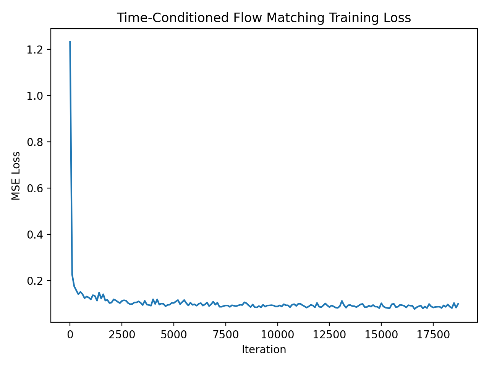
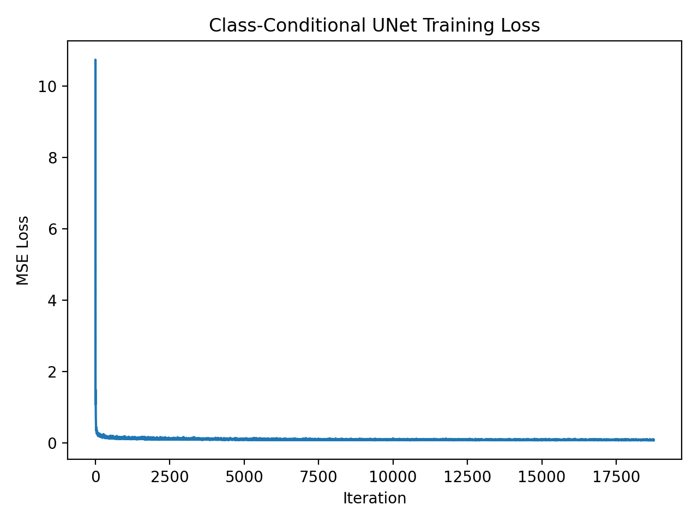

2.3 — Sampling from the Time-Conditioned UNet
We sample from the trained time-conditioned UNet using iterative denoising. Results are shown after 1, 5, and 10 epochs.
Epoch 1

Epoch 5

Epoch 10

We train a time-conditioned UNet using flow matching on MNIST. Below is the training loss curve over the full training process.
We sample from the trained time-conditioned UNet using iterative denoising. Results are shown after 1, 5, and 10 epochs.
We extend flow matching to class conditioning using classifier-free guidance. Below is the training loss curve for the class-conditioned UNet.
We sample from the class-conditioned UNet using classifier-free guidance with guidance scale γ = 5.0. Each row contains 4 samples per digit (0–9).